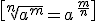

Números reales
Raíces
 n=índice a=radicando b= raíz
n=índice a=radicando b= raíz
- Ejemplos:
no existe
Se puede probar que:
demostración:
Entonces:

Ejemplos:
Ejercicio: pasa de potencia fraccionaria a raíz o viceversa:
Soluciones:
Obra publicada con Licencia Creative Commons Reconocimiento No comercial Compartir igual 4.0